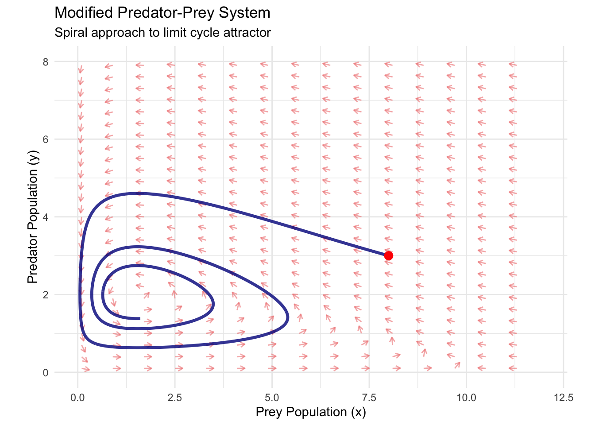
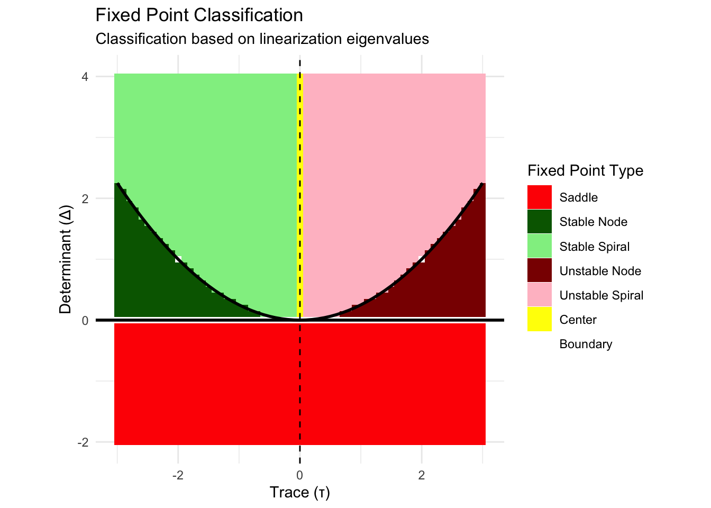

Chapter 5 The Phase Line of One-Dimensional Dynamics
You’re adjusting the temperature of a chemical reactor. At low temperatures, the reaction barely proceeds—one stable state where reactants remain largely unchanged. Increase the heat slightly, and suddenly the system exhibits two stable states: one where the reaction completes fully, another where it stalls partway through. Push the temperature higher still, and something remarkable happens: the two stable states collide and vanish, leaving only chaotic, oscillating behavior.
This isn’t science fiction—it’s the everyday reality of nonlinear systems undergoing bifurcations. Where our previous exploration revealed the rich dynamics possible within single parameter regimes, today we venture into the even more fascinating territory of how these dynamics transform as we vary system parameters.
The phase line becomes our primary tool for this investigation. Unlike the phase portraits we constructed before, which showed us snapshots of behavior for fixed parameters, phase line analysis reveals the complete evolutionary story of a dynamical system as its parameters change. We’ll discover how stable and unstable states appear, collide, and disappear through mathematical catastrophes called bifurcations.
5.1 The Geometry of Flow
Before diving into parameter-dependent behavior, we need to sharpen our visualization tools. For any one-dimensional system \(\dot{x} = f(x)\), the phase line provides a complete geometric picture of all possible dynamics.
Consider the deceptively simple equation:
\[\dot{x} = x^2 - 1\]
Rather than immediately solving this algebraically, let’s first understand it geometrically. The phase line is constructed by plotting the function \(f(x) = x^2 - 1\) and examining where it crosses the x-axis (our fixed points) and whether it lies above or below the axis (determining flow direction).
# Load required libraries
library(ggplot2)
library(dplyr)
library(gridExtra)
library(viridis)
# Define the function f(x) = x^2 - 1
f <- function(x) x^2 - 1
# Create phase line data
x_vals <- seq(-3, 3, by = 0.1)
fx_vals <- f(x_vals)
phase_data <- data.frame(
x = x_vals,
fx = fx_vals
)
# Find fixed points
fixed_points <- c(-1, 1) # Analytical solution
# Create phase line plot
phase_line_plot <- ggplot(phase_data, aes(x = x, y = fx)) +
geom_line(color = "steelblue", size = 1.5) +
geom_hline(yintercept = 0, linetype = "solid", alpha = 0.8, size = 0.8) +
geom_vline(xintercept = fixed_points, linetype = "dashed", alpha = 0.6, color = "red") +
geom_point(data = data.frame(x = fixed_points, fx = c(0, 0)),
aes(x = x, y = fx), color = "red", size = 3) +
# Add flow arrows
geom_segment(aes(x = -2.5, y = 0, xend = -2.3, yend = 0),
arrow = arrow(length = unit(0.3, "cm")), color = "darkgreen", size = 1.2) +
geom_segment(aes(x = 0, y = 0, xend = -0.2, yend = 0),
arrow = arrow(length = unit(0.3, "cm")), color = "darkgreen", size = 1.2) +
geom_segment(aes(x = 2.3, y = 0, xend = 2.5, yend = 0),
arrow = arrow(length = unit(0.3, "cm")), color = "darkgreen", size = 1.2) +
# Annotations
annotate("text", x = -1, y = 0.3, label = "Stable", color = "darkgreen", size = 4) +
annotate("text", x = 1, y = 0.3, label = "Stable", color = "darkgreen", size = 4) +
annotate("text", x = -2, y = -0.3, label = "←", color = "darkgreen", size = 6) +
annotate("text", x = 0, y = -0.3, label = "←", color = "darkgreen", size = 6) +
annotate("text", x = 2, y = -0.3, label = "→", color = "darkgreen", size = 6) +
# Regions
annotate("rect", xmin = -3, xmax = -1, ymin = -0.1, ymax = 0.1,
alpha = 0.2, fill = "blue") +
annotate("rect", xmin = -1, xmax = 1, ymin = -0.1, ymax = 0.1,
alpha = 0.2, fill = "red") +
annotate("rect", xmin = 1, xmax = 3, ymin = -0.1, ymax = 0.1,
alpha = 0.2, fill = "blue") +
labs(
title = "Phase Line Analysis: x² - 1",
x = "x",
y = "f(x) = x² - 1",
subtitle = "Fixed points and flow direction revealed geometrically"
) +
theme_minimal() +
theme(panel.grid.minor = element_blank()) +
ylim(-2, 6)
print(phase_line_plot)## Warning in geom_segment(aes(x = -2.5, y = 0, xend = -2.3, yend = 0), arrow = arrow(length = unit(0.3, : All aesthetics have length 1, but the data has 61 rows.
## ℹ Please consider using `annotate()` or provide this layer with data containing a single row.## Warning in geom_segment(aes(x = 0, y = 0, xend = -0.2, yend = 0), arrow = arrow(length = unit(0.3, : All aesthetics have length 1, but the data has 61 rows.
## ℹ Please consider using `annotate()` or provide this layer with data containing a single row.## Warning in geom_segment(aes(x = 2.3, y = 0, xend = 2.5, yend = 0), arrow = arrow(length = unit(0.3, : All aesthetics have length 1, but the data has 61 rows.
## ℹ Please consider using `annotate()` or provide this layer with data containing a single row.## Warning: Removed 8 rows containing missing values or values outside the scale range (`geom_line()`).
The phase line immediately reveals the system’s complete behavior. Where \(f(x) > 0\) (above the x-axis), we have \(\dot{x} > 0\), so \(x\) increases—flow moves rightward. Where \(f(x) < 0\) (below the x-axis), we have \(\dot{x} < 0\), so \(x\) decreases—flow moves leftward.
The fixed points at \(x = -1\) and \(x = 1\) are both stable. Any initial condition in the interval \((-\infty, -1)\) flows leftward toward \(x = -1\). Any condition in \((1, \infty)\) flows rightward toward \(x = 1\). But what about the interval \((-1, 1)\)? Here, all trajectories flow leftward toward \(x = -1\).
This geometric approach transforms the abstract differential equation into a vivid landscape of attraction and repulsion. We can immediately identify basins of attraction, understand long-term behavior, and predict system response to perturbations—all without solving a single integral.
5.2 The Universal Patterns of Creation and Annihilation
Now we’re ready to explore how these geometric patterns change as we vary parameters. The most fundamental bifurcations in one-dimensional systems follow universal templates that appear across disciplines, from population biology to solid-state physics.
5.2.1 The Saddle-Node Bifurcation: Creation from Nothing
Consider the parameter-dependent system:
\[\dot{x} = \mu - x^2\]
This innocent equation contains a profound story about how fixed points appear and disappear. The parameter \(\mu\) controls the system’s fundamental character.
For \(\mu < 0\), we have \(f(x) = \mu - x^2 < 0\) for all \(x\) (since \(x^2 \geq 0\) always). The phase line lies entirely below the x-axis, creating uniform leftward flow with no fixed points. Every trajectory heads toward \(x = -\infty\).
For \(\mu = 0\), something special happens. The function \(f(x) = -x^2\) touches the x-axis at exactly one point: \(x = 0\). This creates a semi-stable fixed point—trajectories approach from one side but not the other.
For \(\mu > 0\), two fixed points suddenly appear where \(\mu - x^2 = 0\), giving us \(x = \pm\sqrt{\mu}\). The negative fixed point \(x = -\sqrt{\mu}\) is stable (since \(f'(x) = -2x > 0\) there), while the positive fixed point \(x = +\sqrt{\mu}\) is unstable (since \(f'(x) = -2x < 0\) there).
# Saddle-node bifurcation analysis
mu_values <- c(-1, -0.25, 0, 0.25, 1)
# Create bifurcation plots
saddle_node_plots <- list()
for (i in seq_along(mu_values)) {
mu <- mu_values[i]
# Define function
f_sn <- function(x) mu - x^2
# Create data
x_vals <- seq(-3, 3, by = 0.1)
fx_vals <- f_sn(x_vals)
plot_data <- data.frame(
x = x_vals,
fx = fx_vals
)
# Find fixed points
if (mu < 0) {
fixed_points <- numeric(0)
fp_stability <- character(0)
} else if (mu == 0) {
fixed_points <- 0
fp_stability <- "semi-stable"
} else {
fixed_points <- c(-sqrt(mu), sqrt(mu))
fp_stability <- c("stable", "unstable")
}
p <- ggplot(plot_data, aes(x = x, y = fx)) +
geom_line(color = "purple", size = 1.2) +
geom_hline(yintercept = 0, linetype = "solid", alpha = 0.8) +
labs(
title = paste("μ =", mu),
x = "x",
y = "μ - x²",
subtitle = ifelse(mu < 0, "No fixed points",
ifelse(mu == 0, "Saddle-node bifurcation",
"Two fixed points"))
) +
theme_minimal() +
ylim(-3, 2) +
xlim(-2.5, 2.5)
# Add fixed points
if (length(fixed_points) > 0) {
fp_colors <- ifelse(fp_stability == "stable", "darkgreen",
ifelse(fp_stability == "unstable", "red", "orange"))
p <- p + geom_point(data = data.frame(x = fixed_points, y = rep(0, length(fixed_points))),
aes(x = x, y = y), color = fp_colors, size = 3)
}
# Add flow arrows
if (mu <= 0) {
# All flow leftward
p <- p +
geom_segment(aes(x = -1.8, y = 0, xend = -2, yend = 0),
arrow = arrow(length = unit(0.2, "cm")), color = "darkgreen") +
geom_segment(aes(x = 0.2, y = 0, xend = 0, yend = 0),
arrow = arrow(length = unit(0.2, "cm")), color = "darkgreen") +
geom_segment(aes(x = 2, y = 0, xend = 1.8, yend = 0),
arrow = arrow(length = unit(0.2, "cm")), color = "darkgreen")
} else {
# Flow toward stable point, away from unstable
p <- p +
geom_segment(aes(x = -2, y = 0, xend = -1.8, yend = 0),
arrow = arrow(length = unit(0.2, "cm")), color = "darkgreen") +
geom_segment(aes(x = 0.2, y = 0, xend = 0, yend = 0),
arrow = arrow(length = unit(0.2, "cm")), color = "darkgreen") +
geom_segment(aes(x = 1.8, y = 0, xend = 2, yend = 0),
arrow = arrow(length = unit(0.2, "cm")), color = "darkgreen")
}
saddle_node_plots[[i]] <- p
}
# Arrange plots
do.call(grid.arrange, c(saddle_node_plots, ncol = 3, nrow = 2))## Warning in geom_segment(aes(x = -1.8, y = 0, xend = -2, yend = 0), arrow = arrow(length = unit(0.2, : All aesthetics have length 1, but the data has 61 rows.
## ℹ Please consider using `annotate()` or provide this layer with data containing a single row.## Warning in geom_segment(aes(x = 0.2, y = 0, xend = 0, yend = 0), arrow = arrow(length = unit(0.2, : All aesthetics have length 1, but the data has 61 rows.
## ℹ Please consider using `annotate()` or provide this layer with data containing a single row.## Warning in geom_segment(aes(x = 2, y = 0, xend = 1.8, yend = 0), arrow = arrow(length = unit(0.2, : All aesthetics have length 1, but the data has 61 rows.
## ℹ Please consider using `annotate()` or provide this layer with data containing a single row.## Warning: Removed 32 rows containing missing values or values outside the scale range (`geom_line()`).## Warning in geom_segment(aes(x = -1.8, y = 0, xend = -2, yend = 0), arrow = arrow(length = unit(0.2, : All aesthetics have length 1, but the data has 61 rows.
## ℹ Please consider using `annotate()` or provide this layer with data containing a single row.## Warning in geom_segment(aes(x = 0.2, y = 0, xend = 0, yend = 0), arrow = arrow(length = unit(0.2, : All aesthetics have length 1, but the data has 61 rows.
## ℹ Please consider using `annotate()` or provide this layer with data containing a single row.## Warning in geom_segment(aes(x = 2, y = 0, xend = 1.8, yend = 0), arrow = arrow(length = unit(0.2, : All aesthetics have length 1, but the data has 61 rows.
## ℹ Please consider using `annotate()` or provide this layer with data containing a single row.## Warning: Removed 28 rows containing missing values or values outside the scale range (`geom_line()`).## Warning in geom_segment(aes(x = -1.8, y = 0, xend = -2, yend = 0), arrow = arrow(length = unit(0.2, : All aesthetics have length 1, but the data has 61 rows.
## ℹ Please consider using `annotate()` or provide this layer with data containing a single row.## Warning in geom_segment(aes(x = 0.2, y = 0, xend = 0, yend = 0), arrow = arrow(length = unit(0.2, : All aesthetics have length 1, but the data has 61 rows.
## ℹ Please consider using `annotate()` or provide this layer with data containing a single row.## Warning in geom_segment(aes(x = 2, y = 0, xend = 1.8, yend = 0), arrow = arrow(length = unit(0.2, : All aesthetics have length 1, but the data has 61 rows.
## ℹ Please consider using `annotate()` or provide this layer with data containing a single row.## Warning: Removed 26 rows containing missing values or values outside the scale range (`geom_line()`).## Warning in geom_segment(aes(x = -2, y = 0, xend = -1.8, yend = 0), arrow = arrow(length = unit(0.2, : All aesthetics have length 1, but the data has 61 rows.
## ℹ Please consider using `annotate()` or provide this layer with data containing a single row.## Warning in geom_segment(aes(x = 0.2, y = 0, xend = 0, yend = 0), arrow = arrow(length = unit(0.2, : All aesthetics have length 1, but the data has 61 rows.
## ℹ Please consider using `annotate()` or provide this layer with data containing a single row.## Warning in geom_segment(aes(x = 1.8, y = 0, xend = 2, yend = 0), arrow = arrow(length = unit(0.2, : All aesthetics have length 1, but the data has 61 rows.
## ℹ Please consider using `annotate()` or provide this layer with data containing a single row.## Warning: Removed 24 rows containing missing values or values outside the scale range (`geom_line()`).## Warning in geom_segment(aes(x = -2, y = 0, xend = -1.8, yend = 0), arrow = arrow(length = unit(0.2, : All aesthetics have length 1, but the data has 61 rows.
## ℹ Please consider using `annotate()` or provide this layer with data containing a single row.## Warning in geom_segment(aes(x = 0.2, y = 0, xend = 0, yend = 0), arrow = arrow(length = unit(0.2, : All aesthetics have length 1, but the data has 61 rows.
## ℹ Please consider using `annotate()` or provide this layer with data containing a single row.## Warning in geom_segment(aes(x = 1.8, y = 0, xend = 2, yend = 0), arrow = arrow(length = unit(0.2, : All aesthetics have length 1, but the data has 61 rows.
## ℹ Please consider using `annotate()` or provide this layer with data containing a single row.## Warning: Removed 20 rows containing missing values or values outside the scale range (`geom_line()`).This sequence reveals the saddle-node bifurcation—the most common way fixed points appear in dynamical systems. At the critical parameter value \(\mu = 0\), a stable and unstable fixed point are born simultaneously, emerging from nothing in a process mathematicians call a tangent bifurcation.
The saddle-node bifurcation appears throughout science and engineering. In laser physics, it describes the threshold where coherent light emission begins. In ecology, it models sudden population crashes when environmental conditions deteriorate. In neuroscience, it explains how neurons transition from quiescent to firing states.
5.2.2 The Pitchfork Bifurcation: Symmetry Breaking
While saddle-node bifurcations create fixed points from nothing, pitchfork bifurcations redistribute stability among existing fixed points, often breaking system symmetry in the process.
Consider the equation:
\[\dot{x} = \mu x - x^3\]
This system always has a fixed point at \(x = 0\) (since \(f(0) = 0\) regardless of \(\mu\)). But its stability and the existence of other fixed points depend critically on \(\mu\).
For \(\mu < 0\), the only fixed point is \(x = 0\), and it’s stable. We can verify this by checking \(f'(0) = \mu < 0\), confirming that small perturbations decay back to zero.
For \(\mu = 0\), we have \(\dot{x} = -x^3\). The origin remains the only fixed point, but its stability becomes marginal. Small perturbations decay as \(x^3\), much slower than exponential decay.
For \(\mu > 0\), everything changes. Setting \(\mu x - x^3 = x(\mu - x^2) = 0\) gives us three fixed points: \(x = 0\), \(x = -\sqrt{\mu}\), and \(x = +\sqrt{\mu}\). The origin becomes unstable (\(f'(0) = \mu > 0\)), while the two symmetric fixed points \(x = \pm\sqrt{\mu}\) are stable.
# Pitchfork bifurcation analysis
mu_values_pf <- c(-1, -0.1, 0, 0.1, 1)
pitchfork_plots <- list()
for (i in seq_along(mu_values_pf)) {
mu <- mu_values_pf[i]
# Define function
f_pf <- function(x) mu * x - x^3
# Create data
x_vals <- seq(-2.5, 2.5, by = 0.1)
fx_vals <- f_pf(x_vals)
plot_data <- data.frame(
x = x_vals,
fx = fx_vals
)
# Find fixed points
if (mu <= 0) {
fixed_points <- 0
fp_stability <- ifelse(mu < 0, "stable", "marginal")
fp_colors <- ifelse(mu < 0, "darkgreen", "orange")
} else {
fixed_points <- c(-sqrt(mu), 0, sqrt(mu))
fp_stability <- c("stable", "unstable", "stable")
fp_colors <- c("darkgreen", "red", "darkgreen")
}
p <- ggplot(plot_data, aes(x = x, y = fx)) +
geom_line(color = "darkred", size = 1.2) +
geom_hline(yintercept = 0, linetype = "solid", alpha = 0.8) +
geom_point(data = data.frame(x = fixed_points, y = rep(0, length(fixed_points))),
aes(x = x, y = y), color = fp_colors, size = 3) +
labs(
title = paste("μ =", mu),
x = "x",
y = "μx - x³",
subtitle = ifelse(mu <= 0, "One fixed point", "Three fixed points")
) +
theme_minimal() +
ylim(-2, 2) +
xlim(-2.5, 2.5)
pitchfork_plots[[i]] <- p
}
# Arrange plots
do.call(grid.arrange, c(pitchfork_plots, ncol = 3, nrow = 2))## Warning: Removed 30 rows containing missing values or values outside the scale range (`geom_line()`).## Warning: Removed 26 rows containing missing values or values outside the scale range (`geom_line()`).
## Removed 26 rows containing missing values or values outside the scale range (`geom_line()`).
## Removed 26 rows containing missing values or values outside the scale range (`geom_line()`).## Warning: Removed 20 rows containing missing values or values outside the scale range (`geom_line()`).
The pitchfork bifurcation at \(\mu = 0\) represents a symmetry-breaking transition. For \(\mu < 0\), the system has a unique stable state at \(x = 0\). For \(\mu > 0\), this central state becomes unstable, and the system must “choose” between two symmetric alternatives at \(x = \pm\sqrt{\mu}\).
This pattern appears wherever systems transition from unique to multiple stable states. In ferromagnetism, it describes how materials spontaneously magnetize below the Curie temperature—the system breaks its underlying symmetry by choosing a preferred magnetic direction. In evolutionary biology, it models how populations can suddenly split into distinct subspecies when environmental pressure exceeds a threshold.
5.3 The Bifurcation Diagram: Mapping Parameter Space
Individual phase line snapshots reveal system behavior for specific parameter values, but the complete story emerges when we track fixed points across the entire parameter range. The bifurcation diagram provides this global perspective.
For the pitchfork bifurcation \(\dot{x} = \mu x - x^3\), we can plot the location of all fixed points as a function of \(\mu\):
# Create bifurcation diagram for pitchfork
mu_range <- seq(-1, 1, by = 0.01)
bifurcation_data <- data.frame()
for (mu in mu_range) {
if (mu <= 0) {
# Only one fixed point at origin
temp_data <- data.frame(
mu = mu,
x_fixed = 0,
stability = "stable"
)
} else {
# Three fixed points
temp_data <- data.frame(
mu = c(mu, mu, mu),
x_fixed = c(-sqrt(mu), 0, sqrt(mu)),
stability = c("stable", "unstable", "stable")
)
}
bifurcation_data <- rbind(bifurcation_data, temp_data)
}
# Create bifurcation diagram
bifurcation_plot <- ggplot(bifurcation_data, aes(x = mu, y = x_fixed, color = stability)) +
geom_line(aes(group = interaction(x_fixed >= 0, stability)), size = 1.2) +
geom_vline(xintercept = 0, linetype = "dashed", alpha = 0.7) +
scale_color_manual(values = c("stable" = "darkgreen", "unstable" = "red")) +
labs(
title = "Pitchfork Bifurcation Diagram",
x = "Parameter μ",
y = "Fixed Point Location",
color = "Stability",
subtitle = "Symmetry breaking at μ = 0"
) +
theme_minimal() +
theme(legend.position = "bottom")
print(bifurcation_plot)# Create saddle-node bifurcation diagram
mu_range_sn <- seq(-0.5, 1, by = 0.01)
bifurcation_data_sn <- data.frame()
for (mu in mu_range_sn) {
if (mu < 0) {
# No fixed points - we'll represent this as empty
next
} else if (mu == 0) {
# One semi-stable fixed point
temp_data <- data.frame(
mu = mu,
x_fixed = 0,
stability = "semi-stable"
)
} else {
# Two fixed points
temp_data <- data.frame(
mu = c(mu, mu),
x_fixed = c(-sqrt(mu), sqrt(mu)),
stability = c("stable", "unstable")
)
}
bifurcation_data_sn <- rbind(bifurcation_data_sn, temp_data)
}
bifurcation_plot_sn <- ggplot(bifurcation_data_sn, aes(x = mu, y = x_fixed, color = stability)) +
geom_line(aes(group = interaction(x_fixed >= 0, stability)), size = 1.2) +
geom_vline(xintercept = 0, linetype = "dashed", alpha = 0.7) +
scale_color_manual(values = c("stable" = "darkgreen", "unstable" = "red", "semi-stable" = "orange")) +
labs(
title = "Saddle-Node Bifurcation Diagram",
x = "Parameter μ",
y = "Fixed Point Location",
color = "Stability",
subtitle = "Fixed points appear at μ = 0"
) +
theme_minimal() +
theme(legend.position = "bottom")
# Display both bifurcation diagrams
grid.arrange(bifurcation_plot, bifurcation_plot_sn, ncol = 1)
These bifurcation diagrams encode the complete parametric behavior of each system. Solid lines represent stable fixed points (where solutions converge), while dashed lines represent unstable fixed points (where solutions diverge). The vertical line at \(\mu = 0\) marks the bifurcation point where qualitative behavior changes.
For the pitchfork bifurcation, we see the characteristic “fork” shape that gives this bifurcation its name. The stable branch splits into two as \(\mu\) increases through zero, while an unstable branch emerges along the original trajectory.
For the saddle-node bifurcation, the two branches approach each other as \(\mu\) decreases toward zero, meeting tangentially at the bifurcation point before disappearing entirely for \(\mu < 0\).
5.4 Hysteresis and the Memory of Systems
Some of the most fascinating behavior in nonlinear systems emerges when we consider not just static parameter values, but parameter variation itself. Many systems exhibit hysteresis—their state depends not only on current parameter values but also on the history of how those parameters changed.
Consider a system undergoing a saddle-node bifurcation as we slowly increase a parameter \(\mu\) from negative to positive values, then decrease it back. If we start with \(\mu < 0\), no stable fixed points exist, and trajectories head toward \(-\infty\). As we increase \(\mu\) through zero, stable and unstable fixed points appear, and the system jumps to the stable branch.
But here’s where hysteresis appears: if we now decrease \(\mu\) back through zero, the system doesn’t immediately return to its original state. Instead, it remains on the stable branch until \(\mu\) becomes sufficiently negative that the stable fixed point disappears in a reverse saddle-node bifurcation.
# Demonstrate hysteresis in saddle-node system
# We'll simulate slowly varying mu and track system response
# Forward sweep: mu increases from -0.5 to 0.5
mu_forward <- seq(-0.5, 0.5, by = 0.01)
# Backward sweep: mu decreases from 0.5 to -0.5
mu_backward <- seq(0.5, -0.5, by = -0.01)
# For each mu value, find where system settles
# Starting from different initial conditions for forward vs backward
x_forward <- numeric(length(mu_forward))
x_backward <- numeric(length(mu_backward))
# Forward sweep - start from large negative x
x_current <- -10
for (i in seq_along(mu_forward)) {
mu <- mu_forward[i]
# Simulate system settling
dt <- 0.01
for (step in 1:1000) { # Let system settle
dx_dt <- mu - x_current^2
x_current <- x_current + dt * dx_dt
if (abs(dx_dt) < 1e-6) break # Converged
}
x_forward[i] <- x_current
}
# Backward sweep - start from the final state of forward sweep
x_current <- tail(x_forward, 1)
for (i in seq_along(mu_backward)) {
mu <- mu_backward[i]
# Simulate system settling
dt <- 0.01
for (step in 1:1000) {
dx_dt <- mu - x_current^2
x_current <- x_current + dt * dx_dt
if (abs(dx_dt) < 1e-6) break
}
x_backward[i] <- x_current
}
# Create hysteresis plot
hysteresis_data <- data.frame(
mu = c(mu_forward, mu_backward),
x = c(x_forward, x_backward),
direction = rep(c("Forward", "Backward"), c(length(mu_forward), length(mu_backward)))
)
hysteresis_plot <- ggplot(hysteresis_data, aes(x = mu, y = x, color = direction)) +
geom_path(size = 1.2, alpha = 0.8) +
geom_point(size = 0.5, alpha = 0.6) +
geom_vline(xintercept = 0, linetype = "dashed", alpha = 0.7) +
scale_color_manual(values = c("Forward" = "blue", "Backward" = "red")) +
labs(
title = "Hysteresis in Saddle-Node System",
x = "Parameter μ",
y = "System State x",
color = "Parameter Direction",
subtitle = "System state depends on parameter history"
) +
theme_minimal() +
theme(legend.position = "bottom")
print(hysteresis_plot)The hysteresis loop reveals how nonlinear systems can have “memory”—their current state encodes information about their past parameter values. This phenomenon appears throughout engineering and science. Magnetic materials exhibit hysteresis as external fields are varied. Economic systems can remain in recession even after conditions that triggered the downturn have improved. Ecological systems may require different conditions to recover from collapse than to prevent it initially.
5.5 Beyond Classical Bifurcations: Transcritical and Complex Scenarios
While saddle-node and pitchfork bifurcations represent the most common transitions in one-dimensional systems, the complete taxonomy is richer. The transcritical bifurcation describes scenarios where fixed points pass through each other, exchanging stability in the process.
Consider the system:
\[\dot{x} = \mu x - x^2\]
This equation always has fixed points at \(x = 0\) and \(x = \mu\). But their relative stability depends on the sign of \(\mu\).
For \(\mu < 0\), the origin \(x = 0\) is stable (\(f'(0) = \mu < 0\)), while \(x = \mu < 0\) is unstable (\(f'(\mu) = -\mu > 0\)). For \(\mu > 0\), the roles reverse: \(x = 0\) becomes unstable (\(f'(0) = \mu > 0\)), while \(x = \mu > 0\) becomes stable (\(f'(\mu) = -\mu < 0\)).
At \(\mu = 0\), both fixed points coincide at the origin, creating a transcritical bifurcation where stability is exchanged between branches.
# Transcritical bifurcation analysis
mu_values_tc <- c(-0.5, -0.1, 0, 0.1, 0.5)
transcritical_plots <- list()
for (i in seq_along(mu_values_tc)) {
mu <- mu_values_tc[i]
# Define function
f_tc <- function(x) mu * x - x^2
# Create data
x_vals <- seq(-1, 1.5, by = 0.05)
fx_vals <- f_tc(x_vals)
plot_data <- data.frame(
x = x_vals,
fx = fx_vals
)
# Fixed points are always at 0 and mu
fixed_points <- c(0, mu)
# Stability depends on mu sign
if (mu < 0) {
fp_colors <- c("darkgreen", "red") # 0 stable, mu unstable
fp_labels <- c("Stable", "Unstable")
} else if (mu == 0) {
fp_colors <- c("orange") # Degenerate case
fp_labels <- c("Critical")
fixed_points <- c(0)
} else {
fp_colors <- c("red", "darkgreen") # 0 unstable, mu stable
fp_labels <- c("Unstable", "Stable")
}
p <- ggplot(plot_data, aes(x = x, y = fx)) +
geom_line(color = "darkblue", size = 1.2) +
geom_hline(yintercept = 0, linetype = "solid", alpha = 0.8) +
geom_point(data = data.frame(x = fixed_points, y = rep(0, length(fixed_points))),
aes(x = x, y = y), color = fp_colors, size = 3) +
labs(
title = paste("μ =", mu),
x = "x",
y = "μx - x²",
subtitle = "Transcritical bifurcation"
) +
theme_minimal() +
ylim(-0.3, 0.3) +
xlim(-0.8, 1.2)
transcritical_plots[[i]] <- p
}
# Arrange plots
do.call(grid.arrange, c(transcritical_plots, ncol = 3, nrow = 2))## Warning: Removed 27 rows containing missing values or values outside the scale range (`geom_line()`).## Warning: Removed 28 rows containing missing values or values outside the scale range (`geom_line()`).## Warning: Removed 30 rows containing missing values or values outside the scale range (`geom_line()`).## Warning: Removed 29 rows containing missing values or values outside the scale range (`geom_line()`).## Warning: Removed 26 rows containing missing values or values outside the scale range (`geom_line()`).
# Create transcritical bifurcation diagram
mu_range_tc <- seq(-0.8, 0.8, by = 0.01)
bifurcation_data_tc <- data.frame()
for (mu in mu_range_tc) {
if (mu == 0) {
temp_data <- data.frame(
mu = mu,
x_fixed = 0,
stability = "critical"
)
} else {
if (mu < 0) {
stabilities <- c("stable", "unstable")
} else {
stabilities <- c("unstable", "stable")
}
temp_data <- data.frame(
mu = c(mu, mu),
x_fixed = c(0, mu),
stability = stabilities
)
}
bifurcation_data_tc <- rbind(bifurcation_data_tc, temp_data)
}
bifurcation_plot_tc <- ggplot(bifurcation_data_tc, aes(x = mu, y = x_fixed, color = stability)) +
geom_line(aes(group = interaction(x_fixed == 0)), size = 1.2) +
geom_vline(xintercept = 0, linetype = "dashed", alpha = 0.7) +
scale_color_manual(values = c("stable" = "darkgreen", "unstable" = "red", "critical" = "orange")) +
labs(
title = "Transcritical Bifurcation Diagram",
x = "Parameter μ",
y = "Fixed Point Location",
color = "Stability",
subtitle = "Fixed points exchange stability at μ = 0"
) +
theme_minimal() +
theme(legend.position = "bottom")
print(bifurcation_plot_tc)The transcritical bifurcation appears frequently in population dynamics, where it often models the transition between extinction and survival. One branch represents the extinct state (\(x = 0\)), while the other represents a viable population (\(x = \mu\), when positive). As environmental conditions improve (\(\mu\) increases), the system transitions from a stable extinction state to a stable population state.
5.6 Cusp Catastrophes and Multiple Parameter Systems
Real systems rarely depend on single parameters. When we extend our analysis to two-parameter families, we discover cusp catastrophes—regions of parameter space where small changes trigger dramatic behavioral transitions.
Consider the two-parameter extension of our saddle-node system:
\(\dot{x} = \mu + \nu x - x^2\)
Here, both \(\mu\) and \(\nu\) control system behavior. The fixed points satisfy:
\(\mu + \nu x - x^2 = 0\)
or equivalently:
\(x^2 - \nu x - \mu = 0\)
Using the quadratic formula:
\(x = \frac{\nu \pm \sqrt{\nu^2 + 4\mu}}{2}\)
For real fixed points, we need \(\nu^2 + 4\mu \geq 0\), which defines a parabolic boundary in \((\mu, \nu)\) parameter space. The cusp point occurs at \(\mu = \nu = 0\), where the two fixed point branches meet.
# Create cusp catastrophe visualization
mu_range <- seq(-1, 1, by = 0.05)
nu_range <- seq(-2, 2, by = 0.05)
# Create parameter grid
param_grid <- expand.grid(mu = mu_range, nu = nu_range)
# Calculate number of real fixed points for each parameter combination
param_grid$num_fixed_points <- ifelse(param_grid$nu^2 + 4*param_grid$mu >= 0, 2, 0)
# Define the cusp boundary
cusp_boundary_mu <- seq(-1, 1, by = 0.01)
cusp_boundary_nu_pos <- 2 * sqrt(-cusp_boundary_mu)## Warning in sqrt(-cusp_boundary_mu): NaNs produced## Warning in sqrt(-cusp_boundary_mu): NaNs produced# Only include valid boundary points
valid_indices <- cusp_boundary_mu <= 0
cusp_boundary <- data.frame(
mu = rep(cusp_boundary_mu[valid_indices], 2),
nu = c(cusp_boundary_nu_pos[valid_indices], cusp_boundary_nu_neg[valid_indices])
)
# Create cusp catastrophe plot
cusp_plot <- ggplot() +
geom_tile(data = param_grid, aes(x = mu, y = nu, fill = factor(num_fixed_points)), alpha = 0.7) +
geom_path(data = cusp_boundary, aes(x = mu, y = nu), color = "red", size = 2) +
geom_point(aes(x = 0, y = 0), color = "red", size = 4) +
scale_fill_manual(values = c("0" = "lightblue", "2" = "lightcoral"),
labels = c("0" = "No fixed points", "2" = "Two fixed points")) +
labs(
title = "Cusp Catastrophe: Two-Parameter Bifurcation",
x = "Parameter μ",
y = "Parameter ν",
fill = "Number of\nFixed Points",
subtitle = "Dramatic transitions occur near the cusp boundary"
) +
theme_minimal() +
annotate("text", x = 0.1, y = 0.1, label = "Cusp Point", color = "red", size = 4)
print(cusp_plot)# Create 3D visualization of the cusp surface
# We'll show fixed point locations as a function of parameters
mu_3d <- seq(-0.5, 0.5, by = 0.05)
nu_3d <- seq(-1.5, 1.5, by = 0.05)
cusp_3d_grid <- expand.grid(mu = mu_3d, nu = nu_3d)
# Calculate fixed points
cusp_3d_grid$discriminant <- cusp_3d_grid$nu^2 + 4*cusp_3d_grid$mu
cusp_3d_grid$x1 <- ifelse(cusp_3d_grid$discriminant >= 0,
(cusp_3d_grid$nu + sqrt(cusp_3d_grid$discriminant))/2, NA)## Warning in sqrt(cusp_3d_grid$discriminant): NaNs producedcusp_3d_grid$x2 <- ifelse(cusp_3d_grid$discriminant >= 0,
(cusp_3d_grid$nu - sqrt(cusp_3d_grid$discriminant))/2, NA)## Warning in sqrt(cusp_3d_grid$discriminant): NaNs produced# Create separate data for each sheet
sheet1 <- cusp_3d_grid[!is.na(cusp_3d_grid$x1), c("mu", "nu", "x1")]
names(sheet1)[3] <- "x"
sheet1$sheet <- "Upper"
sheet2 <- cusp_3d_grid[!is.na(cusp_3d_grid$x2), c("mu", "nu", "x2")]
names(sheet2)[3] <- "x"
sheet2$sheet <- "Lower"
cusp_surface_data <- rbind(sheet1, sheet2)
# 2D projection showing the folded surface
cusp_surface_plot <- ggplot(cusp_surface_data, aes(x = mu, y = x, color = nu)) +
geom_point(size = 0.5, alpha = 0.6) +
scale_color_viridis_c() +
labs(
title = "Cusp Surface: Fixed Points vs Parameters",
x = "Parameter μ",
y = "Fixed Point Location x",
color = "Parameter ν",
subtitle = "The folded surface creates multiple equilibria"
) +
theme_minimal()
print(cusp_surface_plot)The cusp catastrophe reveals how two-parameter systems can exhibit sudden jumps between different stable states as parameters vary continuously. Inside the cusp region (where \(\nu^2 + 4\mu < 0\)), no equilibria exist. Outside the cusp, two equilibria coexist, creating potential for hysteresis and sudden transitions.
This geometric structure appears in diverse contexts. In optics, it describes the caustic patterns formed by light passing through curved surfaces. In psychology, it models sudden changes in perception or decision-making. In structural engineering, it explains how loaded beams can suddenly buckle when stress exceeds critical values.
5.7 Imperfect Bifurcations and Structural Stability
Real-world systems rarely exhibit the perfect symmetries assumed in our idealized models. Small perturbations—unavoidable noise, measurement errors, or unmodeled effects—can qualitatively change bifurcation behavior. This leads us to consider structural stability: which bifurcation patterns persist under small perturbations, and which disappear entirely?
Consider our pitchfork bifurcation \(\dot{x} = \mu x - x^3\) with a small asymmetric perturbation:
\(\dot{x} = \mu x - x^3 + \epsilon\)
where \(\epsilon\) represents some small bias or offset. Even tiny values of \(\epsilon\) destroy the perfect symmetry that created the pitchfork structure.
# Imperfect pitchfork bifurcation
epsilon_values <- c(0, 0.02, 0.05, 0.1)
mu_range_imperfect <- seq(-0.5, 0.5, by = 0.01)
imperfect_bifurcation_data <- data.frame()
for (eps in epsilon_values) {
for (mu in mu_range_imperfect) {
# Find fixed points numerically for mu*x - x^3 + epsilon = 0
# This is equivalent to x^3 - mu*x - epsilon = 0
# Use numerical root finding approach
f_imperfect <- function(x) mu*x - x^3 + eps
# Search for roots in reasonable range
roots <- numeric(0)
test_points <- seq(-3, 3, by = 0.1)
for (i in 1:(length(test_points)-1)) {
if (f_imperfect(test_points[i]) * f_imperfect(test_points[i+1]) < 0) {
# Sign change indicates root
root <- uniroot(f_imperfect, c(test_points[i], test_points[i+1]))$root
roots <- c(roots, root)
}
}
# Remove duplicates
if (length(roots) > 0) {
roots <- unique(round(roots, 6))
# Check stability
f_prime <- function(x) mu - 3*x^2
for (root in roots) {
stability <- ifelse(f_prime(root) < 0, "stable", "unstable")
temp_data <- data.frame(
epsilon = eps,
mu = mu,
x_fixed = root,
stability = stability
)
imperfect_bifurcation_data <- rbind(imperfect_bifurcation_data, temp_data)
}
}
}
}
# Create plots for different epsilon values
imperfect_plots <- list()
for (i in seq_along(epsilon_values)) {
eps <- epsilon_values[i]
subset_data <- imperfect_bifurcation_data[imperfect_bifurcation_data$epsilon == eps,]
p <- ggplot(subset_data, aes(x = mu, y = x_fixed, color = stability)) +
geom_point(size = 0.8, alpha = 0.7) +
geom_vline(xintercept = 0, linetype = "dashed", alpha = 0.7) +
scale_color_manual(values = c("stable" = "darkgreen", "unstable" = "red")) +
labs(
title = paste("ε =", eps),
x = "Parameter μ",
y = "Fixed Point x",
subtitle = ifelse(eps == 0, "Perfect pitchfork", "Imperfect bifurcation")
) +
theme_minimal() +
theme(legend.position = "none") +
ylim(-1, 1)
imperfect_plots[[i]] <- p
}
# Arrange plots
do.call(grid.arrange, c(imperfect_plots, ncol = 2, nrow = 2))
The imperfect pitchfork reveals how small perturbations can fundamentally alter system behavior. The symmetric pitchfork structure breaks into separate saddle-node bifurcations, eliminating the region of bistability that existed in the perfect case. This demonstrates that pitchfork bifurcations are structurally unstable—they disappear under generic perturbations.
In contrast, saddle-node bifurcations are structurally stable. Small perturbations may shift the bifurcation point but preserve the basic creation/annihilation mechanism. This structural stability explains why saddle-node bifurcations are ubiquitous in applications, while perfect pitchfork bifurcations are rare in real systems.
5.8 Phase Line Analysis: A Universal Tool
The techniques we’ve developed—phase line construction, stability analysis, and bifurcation tracking—form a universal toolkit for understanding one-dimensional nonlinear dynamics. These methods apply regardless of the specific mathematical form of \(f(x)\).
Consider a more complex example with transcendental functions:
\(\dot{x} = \sin(x) - \mu\)
This system exhibits rich bifurcation behavior as \(\mu\) varies. For \(|\mu| > 1\), no fixed points exist. For \(|\mu| = 1\), saddle-node bifurcations create/destroy fixed point pairs. For \(|\mu| < 1\), multiple stable and unstable fixed points coexist.
# Transcendental bifurcation example
mu_values_sin <- c(-1.2, -1, -0.5, 0, 0.5, 1, 1.2)
sin_bifurcation_plots <- list()
for (i in seq_along(mu_values_sin)) {
mu <- mu_values_sin[i]
# Define function
f_sin <- function(x) sin(x) - mu
# Create data
x_vals <- seq(-2*pi, 2*pi, by = 0.1)
fx_vals <- f_sin(x_vals)
plot_data <- data.frame(
x = x_vals,
fx = fx_vals
)
# Find fixed points numerically
fixed_points <- numeric(0)
for (j in 1:(length(x_vals)-1)) {
if (fx_vals[j] * fx_vals[j+1] < 0) {
root <- uniroot(f_sin, c(x_vals[j], x_vals[j+1]))$root
fixed_points <- c(fixed_points, root)
}
}
# Remove duplicates
if (length(fixed_points) > 0) {
fixed_points <- unique(round(fixed_points, 4))
}
p <- ggplot(plot_data, aes(x = x, y = fx)) +
geom_line(color = "darkgreen", size = 1.2) +
geom_hline(yintercept = 0, linetype = "solid", alpha = 0.8) +
labs(
title = paste("μ =", mu),
x = "x",
y = "sin(x) - μ",
subtitle = paste("Number of fixed points:", length(fixed_points))
) +
theme_minimal() +
ylim(-2.5, 2.5)
# Add fixed points
if (length(fixed_points) > 0) {
p <- p + geom_point(data = data.frame(x = fixed_points, y = rep(0, length(fixed_points))),
aes(x = x, y = y), color = "red", size = 2)
}
sin_bifurcation_plots[[i]] <- p
}
# Arrange plots
do.call(grid.arrange, c(sin_bifurcation_plots[1:4], ncol = 2, nrow = 2))
This transcendental system demonstrates how phase line analysis scales to arbitrary nonlinear functions. The geometric approach—identifying where \(f(x)\) crosses zero, determining flow direction from the sign of \(f(x)\), and analyzing stability from the slope \(f'(x)\)—works regardless of analytical complexity.
5.9 The Landscape Perspective
Phase line analysis reveals dynamical systems as landscapes of attraction and repulsion. Stable fixed points correspond to valleys where trajectories converge. Unstable fixed points correspond to hilltops where trajectories diverge. The height of the landscape at any point reflects the “velocity” \(\dot{x} = f(x)\) of trajectories passing through.
Bifurcations represent topological changes in this landscape. Saddle-node bifurcations create new valleys and hilltops from flat regions. Pitchfork bifurcations redistribute the depth of existing valleys. Transcritical bifurcations cause valleys and hilltops to exchange positions.
This landscape metaphor provides intuition for more complex phenomena. Metastability occurs when shallow valleys separate deep valleys—systems can remain trapped in suboptimal states for long periods before eventually reaching global equilibria. Noise-induced transitions happen when random fluctuations provide enough energy to escape shallow valleys. Hysteresis loops arise when parameter changes alter the landscape faster than trajectories can respond.
5.10 Building Toward Higher Dimensions
The tools developed in this exploration—geometric thinking, stability analysis, bifurcation tracking—form the foundation for understanding dynamics in any dimension. Every multi-dimensional system can be understood by building up from these one-dimensional building blocks.
In our next post, we’ll extend these concepts to two-dimensional systems, where entirely new phenomena become possible. We’ll discover limit cycles—closed orbital trajectories that don’t exist in one dimension. We’ll explore the famous Lotka-Volterra predator-prey model and see how species interactions create oscillatory dynamics. We’ll investigate homoclinic bifurcations where stable and unstable manifolds connect, creating complex transitional behavior.
But the geometric intuition we’ve developed—reading landscapes of attraction and repulsion, tracking how these landscapes change with parameters, understanding the universal patterns of creation, annihilation, and exchange—remains central to everything that follows.
The phase line has taught us to see dynamics as geometry, parameters as landscape architects, and bifurcations as moments of topological transformation. These insights, born from our careful study of one-dimensional flows, illuminate the hidden structure underlying all complex dynamical behavior.
In one dimension, we discovered that complexity emerges not from chaos, but from the interplay between stability and instability, between attraction and repulsion, between the local and the global. This is the fundamental lesson of nonlinear dynamics: simple rules, when allowed to operate in nonlinear feedback loops, generate the rich patterns we observe throughout nature and society.
The dance between order and complexity begins with understanding how single variables change over time. From this foundation, we can build toward understanding how entire systems—ecosystems, economies, climates, and minds—navigate the landscapes of possibility that govern their behavior.